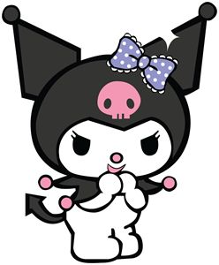

1. ¿En qué década se consolidó el rock and roll como fenómeno masivo?
2. ¿A qué género musical de los 90 se le asocia principalmente a Nirvana?
3. ¿Quién es el vocalista emblemático de Caifanes?
4. ¿Cuál de estos géneros NO fue parte de la receta original del rock?
